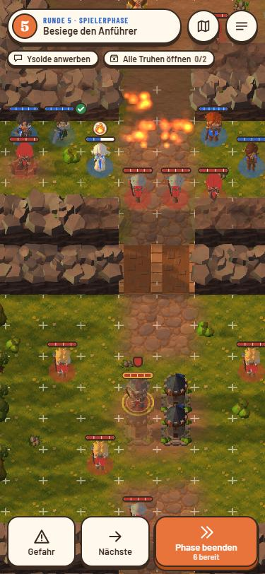

Drei Fragen: Wie bewegt sich eine Figur, die wartet? Wie hält sie ihre Waffe? Und steht sie auf dem Brett entspannt oder kampfbereit da? Alle Bühnen zeigen die echten Brettmodelle mit den echten Waffen. Ziehen dreht.

Dev-Build, Handy 375 × 812, Zoom „Nah“. Eine Figur ist rund 50 Bildpunkte hoch.
Heute hängt jede Waffe am Handgelenk und wird nur um einen Winkel gedreht; dadurch liegen Lanze und Stab neben der Hand und das Schwert zeigt nach vorn. Künftig hat jedes Waffenmodell einen Griffpunkt mit fester Achse, jede Figur einen Griff-Sockel in der Handfläche, und die Waffenart legt fest, wie gegriffen wird. Dieselben Griffe tragen später die Kampfanimationen.
| Waffenart | Hand · Griffpunkt | In Ruhe | Kampfhaltung |
|---|---|---|---|
| Stangen: Lanze, Speer, Stab | rechts · Schaft auf Schulterhöhe | senkrecht, Schaftende auf dem Boden | Lanze waagerecht zum Stoß, Stab schräg vor |
| Klingen: Schwert, Dolch | rechts · Heft unter der Parierstange, Schneide nach vorn | Spitze nach oben, Hand vor der Hüfte | schräg nach vorn oben |
| Äxte und Hämmer | rechts · unteres Stielviertel | auf der Schulter, Kopf hinten außen, Schneide nach oben | erhoben, Schneide nach vorn |
| Bögen | links · Griffmitte | senkrecht neben dem Bein | senkrecht vor dem Körper |
| Bücher und Foki | links · Buchrücken | zugeklappt an der Hüfte | aufgeschlagen auf der flachen Hand, Seiten zur Figur; die Rechte zaubert |
| Schilde | links · Armschlaufe am Unterarm | außen am Unterarm, frei vom Oberarm (Thema 3) | leicht vor den Körper |
| Instrumente: Laute | links am Hals, rechts am Korpus | vor dem Bauch | wie in Ruhe |
idle je Haltung, guard für die Kampfhaltung), nicht zur Laufzeit gerechnet. Die Gesten sind eigene kurze Clips.